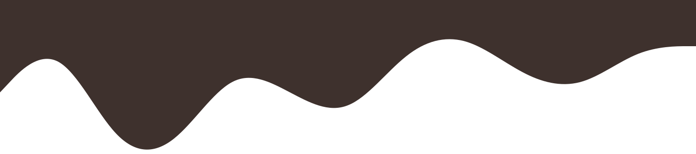

01. 概要と目的 / Overview
グループワーク制作での成果物（北海道産小麦のラスク提案Webサイト）のアーカイブ化と同時に、チームメンバー5人のパーソナリティや強みを多角的に届けるためのチーム公式Webサイト構築プロジェクトです。
制作のキーポイント
- グループワーク成果物の可視化： 単なる実績掲載にとどまらず、思考プロセス（ケーススタディ）を含めたアーカイブとして整理。
- メンバープロフィールの深掘り： Googleフォームで事前集計したデータをもとに、各メンバーの強みや人柄を多角的に紹介。
- アイキャッチなメインビジュアル： MEGさんの繊細なセンスが活きるグラフィックをファーストビューに配置し、サイト全体の印象を牽引。
02. UI/UXデザイン・配色のこだわり / Design Strategy
🍊 多彩な表情を見せる「さまざまなオレンジ」の配色戦略
単一のオレンジに限定せず、トーンや鮮度の異なる複数カラーを組み合わせることで、メンバーそれぞれの多様な個性とチームの温かな雰囲気を表現しました。
👁 視線誘導と高い可読性の確保
濃色背景上での視認性低下を防ぐため、高透過率のホワイトカードやマーカー風のハイライトを採用し、重要情報へ自然に視線が届くレイアウトに仕上げました。
📐 デザインシステムの共通化
CSS変数（:root）やGoogle Fontsを活用してフォント・カラーの管理を一元化し、サイト全体でトーン＆マナーの揃ったデザインを維持しています。
03. フロントエンド実装・インタラクション / Development
-
デザインカンプの比率計算と正確な再現：
アートボードの基準サイズから各要素の比率を細かく算出し、ブレのない緻密なレイアウトを実装しました。 -
滑らかなアコーディオン処理：
「VIEW MORE」ボタン押下時の開閉挙動にはJavaScript（scrollHeight）を用い、コンテンツ量に応じたスムーズな開閉アニメーションを実装しています。 -
トリミングに頼らない画像の切り抜き表示：
object-fit: coverを指定することで、縦横比の異なる画像素材であってもアスペクト比を崩さず枠内に綺麗にフィットさせています。
04. 制作プロセス & 約4日間のロードマップ / Schedule & Workflow
プロフィール収集・コンテンツ整理
Googleフォームを用いてメンバー5人分の詳細情報（MBTI、イメージカラー、Q&A等）を集計。収集したデータをもとにサイト構造および全体の情報設計を策定しました。
ビジュアル準備・デザイン方針策定
デザインカンプを制作し、策定したカラーパレットに沿ってCSS変数をセットアップ。併せてMEGさんへメインビジュアルの制作を依頼しました。
コーディング・AI連携・内容整理
HTML5/CSS3/JavaScriptによるコーディングを実施。AIでのコード生成を組み込むことで、アコーディオン（scrollHeight）等の動的処理を高速実装し、レスポンシブ検証・表示崩れの修正を経て完成させました。
05. GW成果物：ラスク提案企画 / Works Concept
MAIN COPY
「サクッと香ばしい、北海道の恵み。」
💡 メインコピーの選定理由・狙い
-
直感的な訴求：
オノマトペ（「サクッ」）を用いて商品の食感と香ばしさを印象付け、ユーザーの五感へダイレクトに訴えかける表現に設定。 -
独自価値の提示：
「北海道産小麦100%」と「専門店の食パンの耳」という高品質かつストーリー性のある独自の強みを、簡潔な一言で力強く表現。
LEAD TEXT
北海道産１００％の小麦をふんだんに使ったご褒美ラスク。
食パンの耳ラスクはおいしく食べる国産の贅沢エコスイーツです。
サクッとした食感と３種類の味わいが特徴。
このたび、待望のオンライン販売を開始しました。
日持ちもするので、ギフトとしてもおすすめです。
地元に愛され、絶大な支持を受けているこの味を、どうぞお楽しみください！
💡 リードテキスト設計のポイント
-
信頼獲得：
ターゲット（20〜30代の健康志向な女性）が重視する「北海道産小麦100%」という素材のこだわりを一言目に配置。 -
SEO対策＆共感：
「ご褒美」「贅沢」「エコスイーツ」などトレンド感のあるワードを散りばめ、検索流入とターゲットの共感を両立。 -
利用シーンの提示：
「オンライン販売開始」「日持ちがする」「ギフトおすすめ」などの情報を冒頭で伝え、店舗未訪問の新規客にも購入価値を明確化。